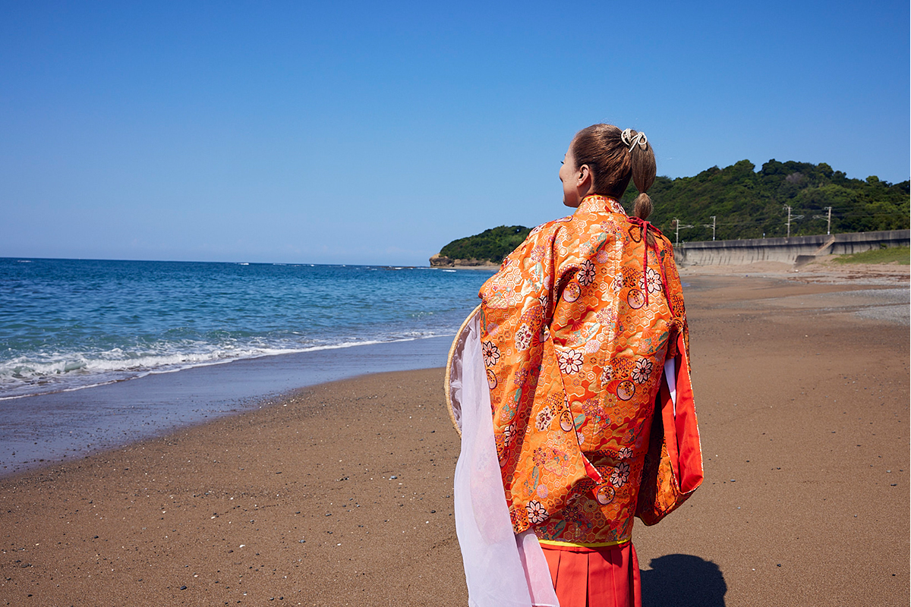
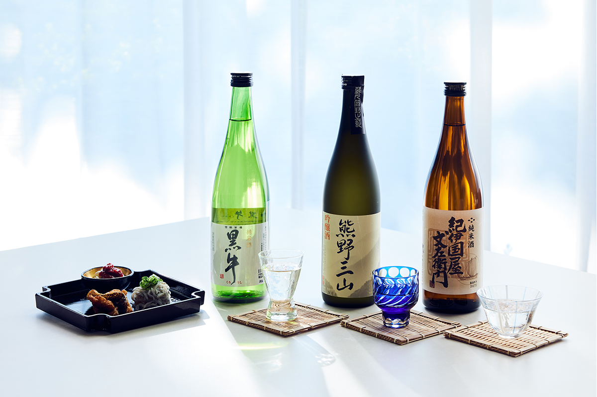
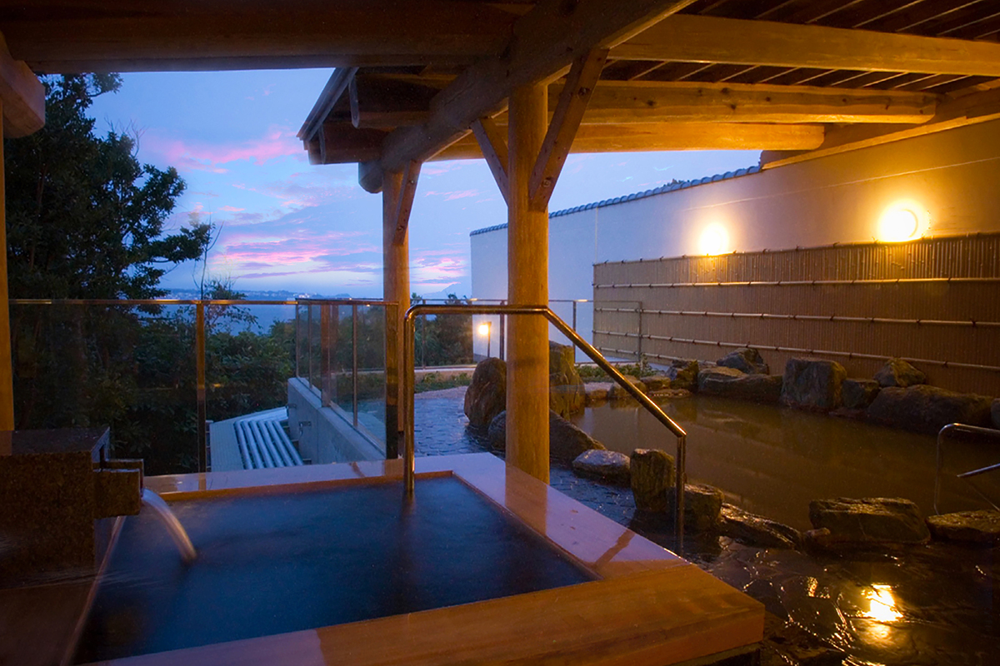

Префектура Вакаяма · Минабэ · отель и онсэн
Отель «Гранд Меркюр» в Минабэ: морской участок Кумано-кодо и чёрная вода онсэна

Отель «Гранд Меркюр» в городке Минабэ стоит в стороне от главных туристических мест, зато у самого моря. Отсюда гостей водили по единственному морскому участку старых паломнических троп Кумано-кодо, а вечером можно было сравнить три сорта местного сакэ и полежать в онсэне с чёрной водой.
Отель
Курорт для знакомства с краем
Сеть «Гранд Меркюр» (Grand Mercure) ставит свои курортные отели не в самых людных местах, а там, где можно ближе узнать местную жизнь. Для этого придумана программа «Мусуби-бито», что можно перевести как «люди, которые связывают»: гостей знакомят с жителями края, его ремёслами и традициями.
Отель в Минабэ стоит на тихом побережье префектуры Вакаяма, к югу от города Вакаяма. Местная гордость Минабэ это древесный уголь бинтётан, и его добавляют даже в воду онсэна.
В отеле 324 номера, стоимость включает ужин, завтрак и напитки. Кормят шведским столом, японской и европейской кухней. Кроме ресторана и большой купальни есть лаунж, магазин и ванна для ног.
Прогулка
Морской путь паломников
Кумано-кодо это сеть старинных троп, по которым веками шли паломники к трём великим святилищам Кумано на юге полуострова Кии. Почти все тропы идут через горы, и лишь один участок проходит вдоль моря. Он начинается как раз у Минабэ, на длинном песчаном пляже Сэнри-но-хама.
Зимой 2025 года отель водил по этому участку гостей. Проводница по имени Наги встречала их в «цубо-сёдзоку», парадном наряде, в котором в старину женщины отправлялись в паломничество. Маршрут длиной около 5 км начинается на пляже Сэнри-но-хама, проходит мимо святилища Сэнри-одзи и храма Сэнри-каннон, а затем через сливовые сады. По дороге вспоминают людей, которые шли здесь к Кумано столетия назад. На привале, с видом на море, гостей угощали чаем и сладостями из Вакаямы.
Прогулка длилась около трёх часов и начиналась в 9:30 или в 13:30. В 2025 году один участник платил 10 000 иен, при двух участниках цена была 8000 иен с человека. Летом программа не проводилась, дети допускались с 10 лет, а в группе было не больше восьми человек. Даты нужно было уточнять в отеле заранее.
Вечер
Сакэ Кисю и онсэн на угле
За ужином можно было заказать за отдельную плату сравнение трёх сортов местного сакэ. Кисю это старое название края, и здешние пивоварни делают сакэ, которое пьют медленно, с закусками.

Самая необычная купальня отеля под открытым небом, с «чёрной водой»: в неё добавляют местный уголь бинтётан. Купальня смотрит прямо на пляж Сэнри-но-хама, и в воде слышно, как набегают волны.

В 2025 году ночь с ужином и завтраком стоила от 26 500 иен с человека при двухместном размещении, с налогом и сервисным сбором, напитки включены.
«Гранд Меркюр Вакаяма Минабэ»
- Адрес
- префектура Вакаяма, уезд Хидака, Минабэ, Ямаути, Омэцу-томари, 348
- Телефон
- +81 3-6627-4732 (бронирование)
- Номера
- 324
- Цены / Вход
- от 26 500 иен с человека за ночь с ужином и завтраком при двухместном размещении, с налогом и сервисным сбором, всё включено
- Заезд / выезд
- 15:00 / 11:00
- Как добраться
- на машине около 10 минут от развязки Минабэ скоростной дороги Ханва; от станции JR Минабэ около 10 минут на трансфере отеля (по предварительной записи)
Прогулка «Мусуби-бито» по Кумано-кодо
- Даты
- по запросу, летом не проводится
- Часы работы
- начало в 9:30 и 13:30, около 180 минут
- Цены / Вход
- 10 000 иен для одного участника, 8000 иен с человека для двоих, для групп от трёх человек по запросу